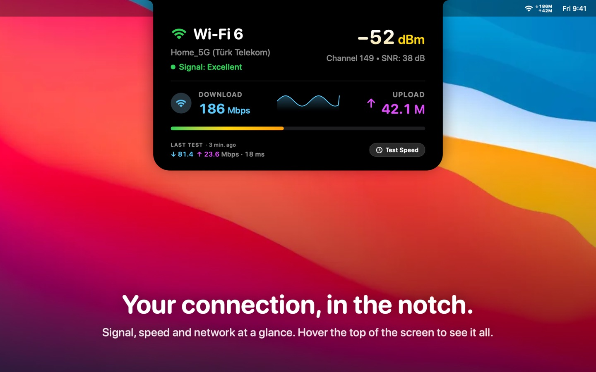

Your connection, in the notch.
NotchFi shows your Mac's signal, live speed and data usage right beside the notch and in the menu bar. Made for iPhone Hotspot and working on the go.

- Island beside the notch — hover to open signal, speed, a 60-second graph and your last speed test.
- iPhone Hotspot aware — carrier name, mobile data tracking and 80%/100% plan warnings.
- One-click speed test — download, upload, latency and jitter, lighter on metered networks.
- Private by design — no account, no analytics, nothing collected.
- 45 languages, VoiceOver and Reduce Motion support. macOS 14 or later.
Available on the Mac App Store.